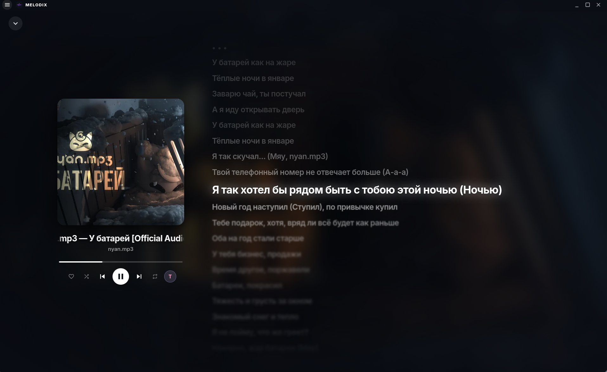
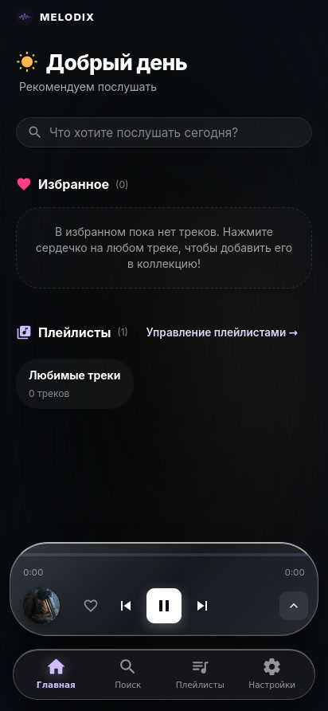
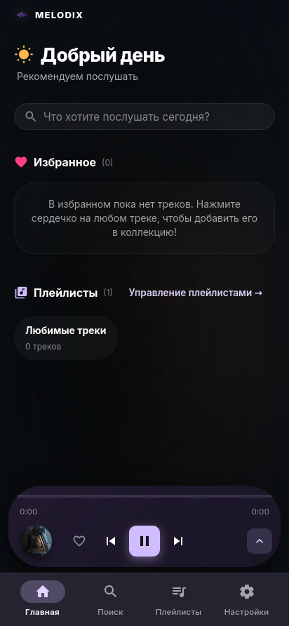
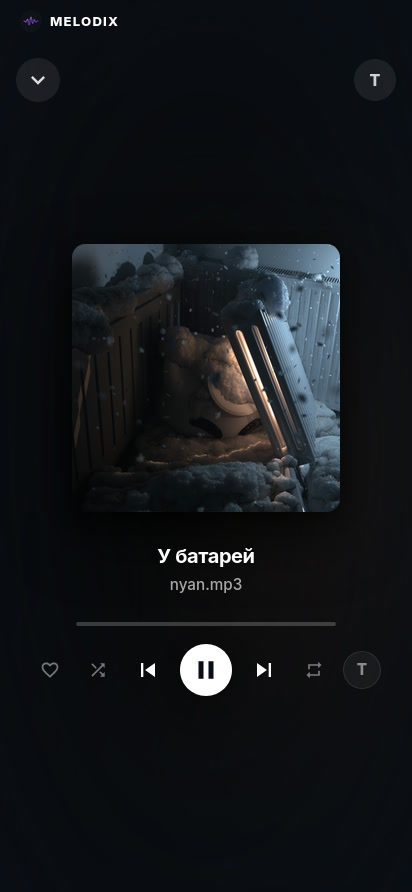
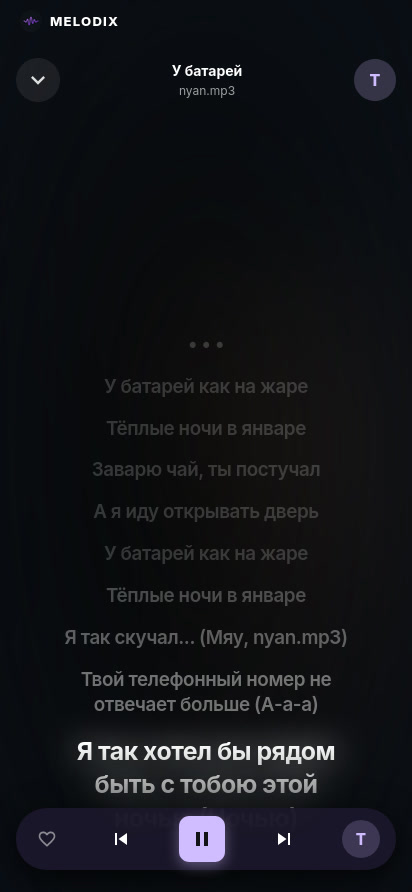

Music player with synced lyrics and adaptive visuals
Cross-platform player for Linux, Windows, macOS, Android, and iOS. Supports word-by-word lyrics, line translation, local audio files, playlist import, and dual-source streaming.

Features
Synced Lyrics & Translation
LRC line-by-line and word-by-word lyrics with timing calibration, click-to-seek, and automatic RU/EN translation.
Adaptive Backgrounds
Color extraction from album covers with Apple Music, Vibrant, Acrylic, Glow, and Liquid Glass material modes.
Dual Audio Sources
YouTube and YouTube Music search with SoundCloud fallback, built-in proxy support, and equal-power crossfade.
Playlist Import & Local Files
Import playlists from Yandex Music, Apple Music, and Spotify, or scan local folders with metadata parsing.
Desktop Integration
Linux MPRIS media controls, Wayland support, system accent color sync on Windows/macOS, and Last.fm scrobbling.
Mobile Ready
Capacitor builds for Android (Material You) and iOS (Liquid Glass) with touch seek and two-mode player view.
Downloads



